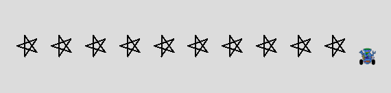

Robot Walk of Fame

Goal:
Use a for loop to make a robot draw a line of stars.
Steps:
- Create a Robot and place it at the left of the window.
- Write code so the Robot draws a 5-point star (Hint: turn angle will be 144)
- Use a for loop to repeat the above code so a line of stars is drawn across the window (see image).